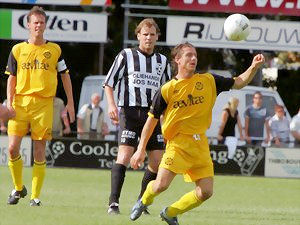

|
VV
Gemert - Roda JC (0-2) 21 juli 2007
|
Roda JC heeft haar tweede oefenwedstrijd met 0-2 gewonnen van
hoofdklasser VV Gemert.

Foto: Peter Kuijpers
Van Tornhout miste drie goede kansen. Zijn vierde actie leidde tot een
strafschop die door Marcel Meeuwis werd benut, 0 -1. Twee minuten later werd het
0-2 door een doelpunt van Willem Janssen. Vijf minuten voor rust was Gemert
dichtbij de 1 - 2, maar de bal trof de paal.
In de tweede helft kreeg Roda JC weinig kansen meer. Gemert was wel drie keer
echt gevaarlijk. Een keer stond Cliff Mardulier een doelpunt in de weg en twee
keer was de paal de redder. Opmerkelijk was het feit dat Roda JC drie minuten
met tien man speelde. Bouchiba kreeg kramp. Er was geen directe wissel inzetbaar
waardoor de net gewisselde Frank van Kouwen weer het veld in kon.
Opstelling:
Tyton (60. Mardulier); Sonkaya (32. de Fauw) Saeijs, Van Kouwen (60. Sibum), De
Jong; Bodor (60. Kah), Meeuwis, Janssen; Bouchiba, Van Tornhout (60. Bejas),
Jamaïque
Toeschouwers: 1.100
© Koempels Pleasure Dome
|
|